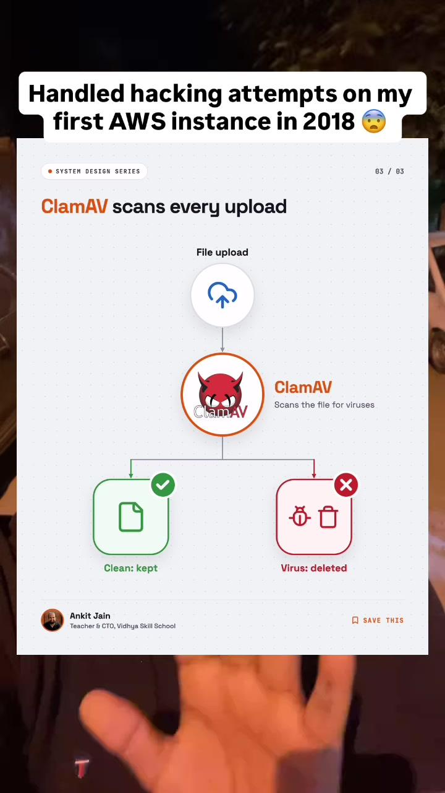

Engineering · Cloud-Security
AWS Production Hardening: Nginx Rate Limiting, ClamAV File Quarantine & Cloudflare WAF
The moment an application is deployed to public cloud infrastructure (AWS EC2, VPS), automated bots scan and assault exposed IP addresses regardless of application size or traffic. Deployments suffer high CPU/RAM spikes and disk corruption not because of legitimate user load, but due to credential stuffing, directory traversal, reverse-shell payloads in disguised file uploads, and cryptocurrency mining exploits. This guide codifies a 3-layer production defense architecture: Cloudflare Edge WAF, Nginx reverse-proxy rate limiting, and an asynchronous ClamAV quarantine isolation sandbox for file processing.
Key Visual Reference Frames

The Three Attack Vectors on Fresh Cloud Deployments
-
Automated Bot Traffic & Scanners:
Bots continuously probe for known vulnerabilities (
/wp-login.php,/.env, phpMyAdmin, actuator endpoints). Blocking single IP addresses in firewall tables fails immediately because attackers rotate residential proxy networks and VPN egress pools. -
Malicious File Upload Exploits:
Attackers rename malicious PHP, Bash, or ELF binaries to
avatar.jpgordocument.pdf. If stored directly on disk and served or executed by worker threads, they establish reverse shells or launch crypto miners (e.g., XMRig) that consume 100% of CPU capacity. - Volumetric L7 DDoS & Token Flooding: Direct origin exposure allows unsophisticated bots to exhaust HTTP connection pools and memory before requests even touch business logic.
The 3-Layer Production Defense Architecture
1Edge Layer: Cloudflare WAF & Managed Rules
Hide origin IPs completely behind Cloudflare reverse proxy:
- Proxy Status: Orange cloud active (origin IP never exposed in DNS A records).
- Security Level: Medium / Managed Challenge on automated ASN pools.
- Security Groups on AWS: Restrict EC2 inbound port 80/443 strictly to Cloudflare's published CIDR IP blocks.
2Reverse Proxy Layer: Nginx Leaky-Bucket Rate Limiting
Configure Nginx to rate-limit requests per client IP to prevent resource exhaustion:
# nginx.conf
http {
# Define rate limit zone (10MB memory zone holds ~160k IP states)
limit_req_zone $binary_remote_addr zone=api_limit:10m rate=10r/s;
limit_conn_zone $binary_remote_addr zone=addr_limit:10m;
server {
listen 80;
server_name api.yourdomain.com;
location /api/ {
# Allow burst of 20 with nodelay to smooth legitimate spikes
limit_req zone=api_limit burst=20 nodelay;
limit_conn addr_limit 10;
proxy_pass http://localhost:3000;
proxy_set_header X-Real-IP $remote_addr;
proxy_set_header X-Forwarded-For $proxy_add_x_forwarded_for;
}
}
}3Storage Layer: ClamAV Quarantine Sandbox
Never store user-uploaded files directly into production storage or executable paths:
- Temporary Quarantine Directory: Save incoming multipart uploads into an isolated quarantine folder (e.g.,
/tmp/quarantine/) with execution flags disabled (noexecmount). - Header & MIME Verification: Verify magic bytes (not just file extension strings).
- ClamAV Scan: Invoke ClamAV daemon (
clamdscan --fdpass) to scan the quarantined file against virus signatures. - Safe Promotion or Instant Eviction: If clean, promote to S3 / permanent storage with randomized UUID naming. If infected, purge immediately and log IP/user metadata to security audit tables.
# Example Node.js / Docker integration with clamdjs
const clamd = require('clamdjs');
const scanner = clamd.createScanner('127.0.0.1', 3310);
async function handleFileUpload(tempFilePath) {
const result = await scanner.scanFile(tempFilePath);
if (clamd.isCleanReply(result)) {
// Safe to promote to persistent S3 bucket
await uploadToS3(tempFilePath);
} else {
// Quarantine breach: delete file and flag tenant
fs.unlinkSync(tempFilePath);
throw new SecurityException('Malicious payload detected: ' + result);
}
}Core Takeaway for AI Engineers
Building fast with AI coding tools (Claude, Cursor, Copilot) is a superpower, but speed without production defenses creates liability. Always enforce origin hiding, request rate limits, and quarantine sandboxes before taking any MVP live on public cloud infrastructure.